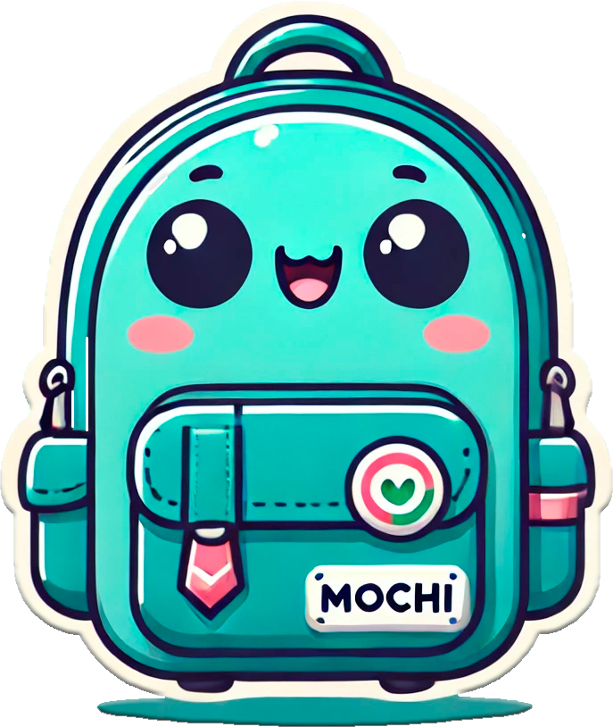
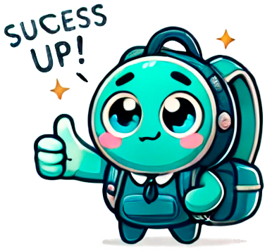

Mira aquí ↑
¡Hola! Soy Mochi, tu entrevistador virtual. ¿Estás listo para comenzar?
Mira aquí para responder ↓
Presiona para hablar

Presiona para hablar

¡Has completado el nivel! Sigue avanzando para prepararte aún mejor.